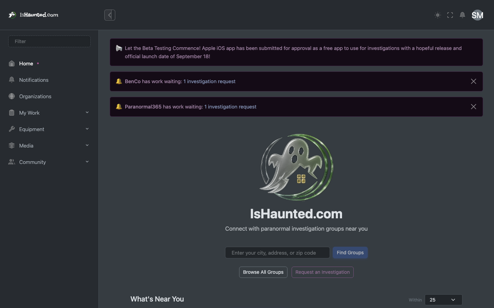
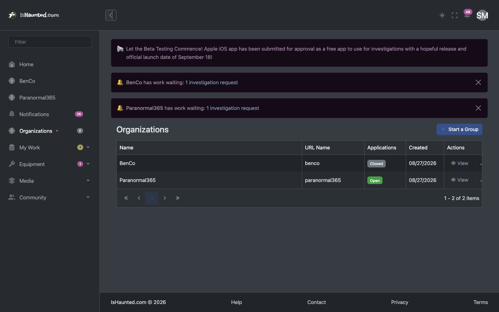
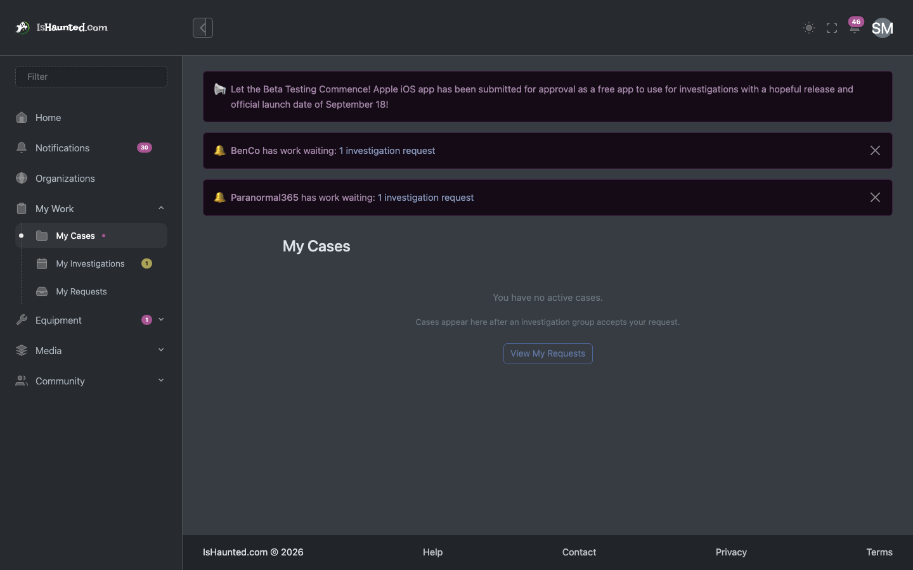
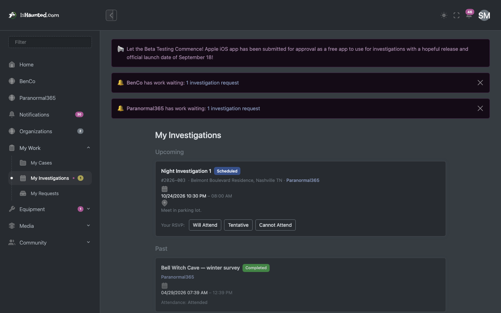
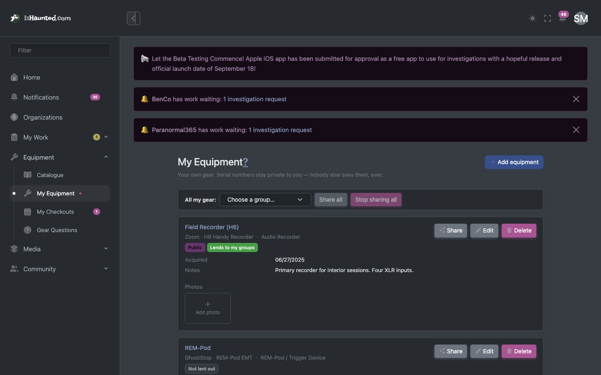
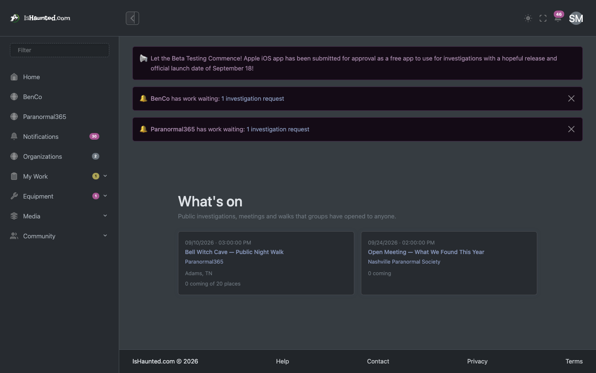
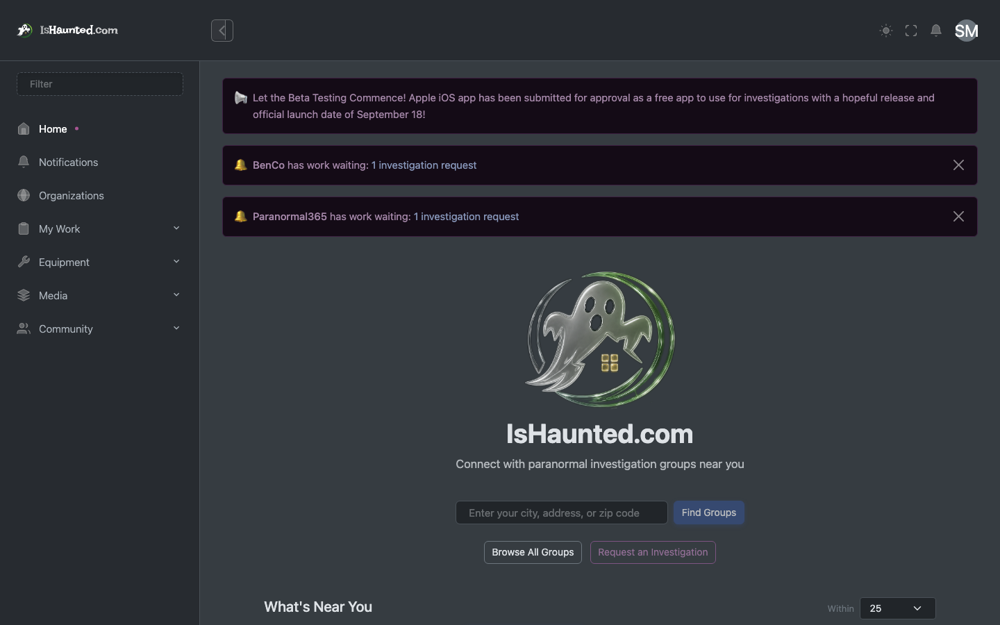
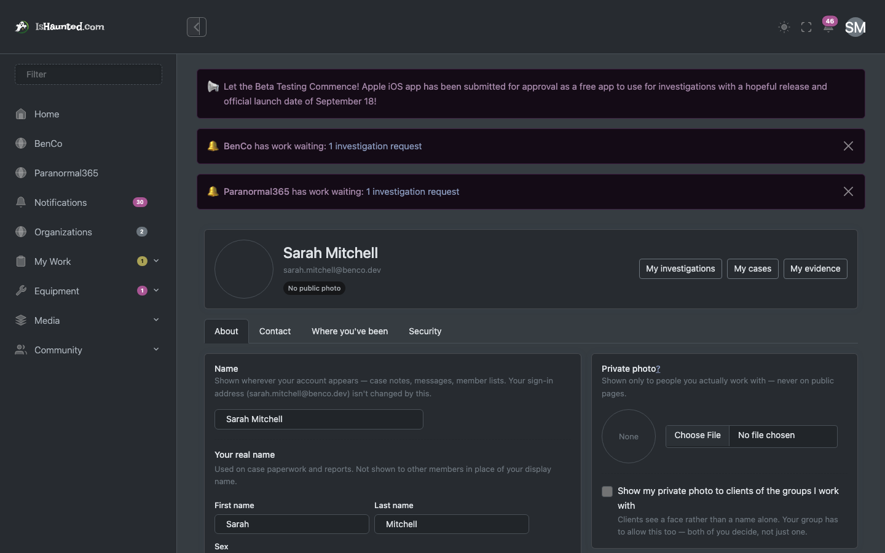

Runs a group: its people, its cases, its equipment and its bill. Written for a developer joining the project.
Every screenshot shows simulated, seeded data, captured in dark mode while signed in as this user type. Nothing here is a real person, case or investigation. Where a page shows a refusal, that is the designed behaviour for this seat.
The owner is the paying customer, and the seat where the business model becomes visible. They manage members and their roles, accept or decline investigation requests, run cases and investigations, hold the equipment inventory, and carry the subscription.
A caution for developers. An administrator passes every permission check by role, so every surface looks perfect from this seat. It is the worst possible place to verify a change to permissions and the easiest place to be fooled. Check the member and viewer documents for what the same page looks like without those grants.
Two things gate every surface, and they are different questions:
Your seat in a group — owner, administrator, member, viewer — answers "may this person do this?". The group's plan answers "does this group pay for this at all?". A member of a group whose plan excludes an area is refused for a completely different reason than a viewer who is not allowed to write, and the site says which.
A refusal is never rendered as "nothing here." An empty list and a server
saying no are different facts, and a page that shows the same grey nothing for both teaches people
to distrust it. Every list goes through LoadResult, which carries loading, empty,
refused, session-ended and rate-limited as distinct states — and every one of them has its own
words on screen.
This matters when reading this document: where a screenshot shows a refusal, that is the designed behaviour for this seat, not a broken page.
Home. The owner's landing page, including work waiting on them.

Organizations. Their groups and the management surfaces.

My cases. Cases the group is working.

My investigations. Investigations across the group.

My equipment. The equipment inventory and its checkouts.

Events. Events the group runs, public and private.

Org subscriptions. The subscription: what the plan covers and what it costs.

Profile. Their own account.
